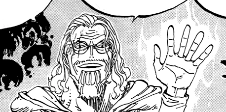
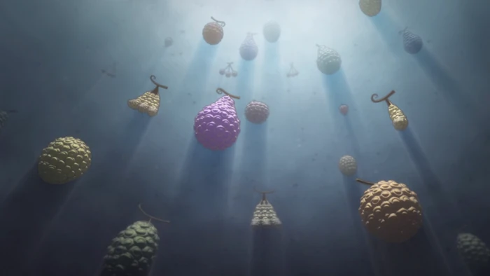

El haki (覇気 Haki, «Ambición»), se podría definir como una fuerza misteriosa que se encuentra en cada ser viviente del mundo de One Piece. No es diferente de los sentidos comunes que la gente normalmente posee. Sin embargo, la mayoría de las personas no lo notan o fallan en despertarlo. Normalmente, hay dos tipos de haki común en todos dado el entrenamiento adecuado, mas hay un tercer tipo de haki que solo un reducido grupo de personajes posee. En términos simples, haki es la capacidad de sentir y utilizar la energía espiritual y dominar a los enemigos.
Las frutas del diablo (悪魔の実 akuma no mi) son unas frutas misteriosas y peculiares repartidas por todo el mundo, conocidas por otorgar a sus consumidores poderes sobrehumanos permanentes, así como la incapacidad de nadar. Con una sola excepción notable, un individuo sólo puede adquirir los poderes de una única fruta del diablo y sobrevivir.
Cada fruta del diablo otorga un poder especial a quien la come, desde los poderes más simples, como estirarse como la goma, hasta poderes capaces de causar destrucción a gran escala, como la creación de terremotos. Cada fruta del diablo es única, y no hay otra igual; es decir, no hay una fruta del diablo que tenga el mismo poder que otra.
